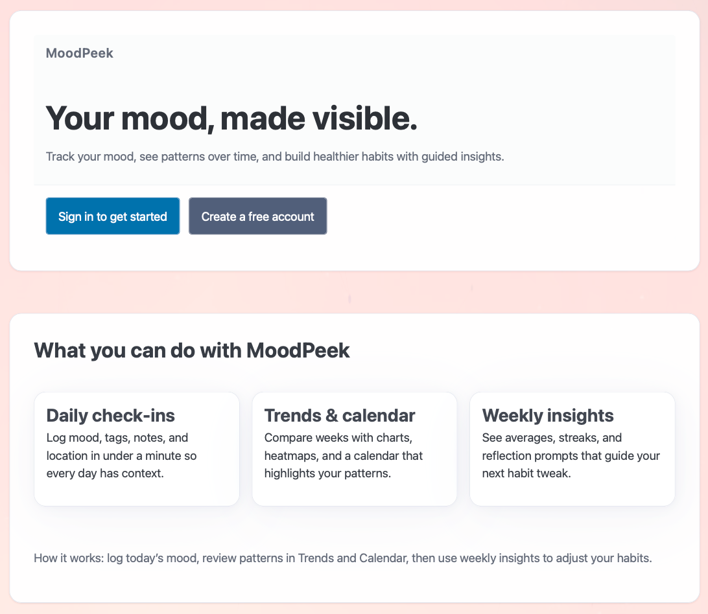

At a glance一览一覽概要En bref
- Problem问题問題課題Problème
- Original MoodPeek focused on visualization; needed structure for habit tracking across multiple users.初版 MoodPeek 侧重可视化，缺少支撑多用户习惯追踪的结构。初版 MoodPeek 側重視覺化，缺少支撐多使用者習慣追蹤的結構。初代 MoodPeek は可視化が中心で、複数ユーザーの習慣トラッキングを支える構造が足りませんでした。Le MoodPeek d’origine misait sur la visualisation ; il lui manquait une structure pour suivre des habitudes avec plusieurs utilisateurs.
- Role角色角色役割Rôle
- Full-stack prototype, UX architecture, multi-user system design全栈原型、UX 架构、多用户系统设计全棧原型、UX 架構、多使用者系統設計フルスタックプロトタイプ、UX アーキテクチャ、マルチユーザーシステム設計Prototype full-stack, architecture UX, conception d’un système multi-utilisateur
- Tools工具工具ツールOutils
- React, JWT authentication, iCal export, Open-Meteo APIReact、JWT 认证、iCal 导出、Open-Meteo APIReact、JWT 認證、iCal 匯出、Open-Meteo APIReact、JWT 認証、iCal エクスポート、Open-Meteo APIReact, authentification JWT, export iCal, API Open-Meteo
- Timeline时间线時間線タイムラインCalendrier
- Structural upgrade from MoodPeek v1在 MoodPeek v1 基础上的结构性升级在 MoodPeek v1 基礎上的結構性升級MoodPeek v1 からの構造的なアップグレードRefonte structurelle de MoodPeek v1
- Key Decisions关键决策關鍵決策主な判断Décisions clés
- Calendar as main anchor, Dashboard quick-glance, inline Weekly Insight, self-reported (no AI inference)日历作为主锚点、仪表盘一眼看全、每周洞察内嵌、由用户自行记录（不用 AI 推断）日曆作為主錨點、儀表盤一眼看全、每週洞察內嵌、由使用者自行記錄（不用 AI 推斷）カレンダーを軸に、ひと目でわかるダッシュボード、週間インサイトをインラインに、自己申告（AI による推測なし）Le calendrier comme ancrage, un tableau de bord lisible d’un coup d’œil, l’aperçu hebdomadaire intégré, une saisie déclarative (sans inférence par IA)
- Result结果結果結果Résultat
- Calendar 2.0 with filtering, Dashboard with streak tracking, multi-user isolation, iCal export.带筛选的日历 2.0、带连续记录追踪的仪表盘、多用户隔离、iCal 导出。帶篩選的日曆 2.0、帶連續記錄追蹤的儀表盤、多使用者隔離、iCal 匯出。フィルター付きのカレンダー 2.0、連続記録を追えるダッシュボード、マルチユーザー分離、iCal エクスポート。Calendrier 2.0 avec filtres, tableau de bord avec suivi des séries, isolation multi-utilisateur, export iCal.

Key Decisions关键决策關鍵決策主な判断Décisions clés
- Calendar is the anchor; weekly insight inline. Instead of scattering views across tabs, the calendar holds everything. Tap a day to see or edit; tap a week header to get the insight summary right there. Removed the standalone Weekly Report page — it was one screen too many.
- Dashboard as quick-glance home. Shows today’s entry shortcut, this-week-at-a-glance, a 7-day sparkline, current streak, and quick nav links. The goal: see something useful in under 2 seconds, then decide whether to dig in.
- Preferences drive personalization. Default city auto-fills weather on each entry; theme (light / dark / system) syncs globally without a page refresh. Each user’s settings are isolated via JWT.
- Keep it self-reported. No automatic mood inference or “mind-reading” features. The user decides what they felt and writes it down. Emotional agency matters more than algorithmic guessing.
- 日历是锚点，每周洞察内嵌其中。不把视图分散到各个标签页，而是让日历承载一切：点某一天查看或编辑，点周标题就在原地看到洞察摘要。去掉了单独的周报页面 — 它是多余的一屏。
- 仪表盘作为一眼看全的首页。展示今日记录入口、本周概览、7 天走势图、当前连续天数和快捷导航。目标是 2 秒内看到有用的信息，再决定要不要深入。
- 偏好设置驱动个性化。默认城市会自动为每条记录填入天气；主题（浅色 / 深色 / 跟随系统）无需刷新即可全局同步。每位用户的设置通过 JWT 相互隔离。
- 坚持由用户自己记录。不做自动情绪推断，也不做“读心”功能。感受是什么，由用户自己决定、自己写下。情绪上的自主权比算法猜测更重要。
- 日曆是錨點，每週洞察內嵌其中。不把檢視分散到各個標籤頁，而是讓日曆承載一切：點某一天檢視或編輯，點周標題就在原地看到洞察摘要。去掉了單獨的週報頁面 — 它是多餘的一屏。
- 儀表盤作為一眼看全的首頁。展示今日記錄入口、本週概覽、7 天走勢圖、當前連續天數和快捷導航。目標是 2 秒內看到有用的資訊，再決定要不要深入。
- 偏好設定驅動個性化。預設城市會自動為每條記錄填入天氣；主題（淺色 / 深色 / 跟隨系統）無需重新整理即可全域性同步。每位使用者的設定透過 JWT 相互隔離。
- 堅持由使用者自己記錄。不做自動情緒推斷，也不做“讀心”功能。感受是什麼，由使用者自己決定、自己寫下。情緒上的自主權比演算法猜測更重要。
- カレンダーを軸に、週間インサイトはその場に。ビューをタブに分散させず、カレンダーにすべてをまとめました。日をタップすれば閲覧・編集、週の見出しをタップすればその場でインサイトの要約が出ます。独立した週間レポート画面は削除しました — 1 画面多すぎたためです。
- ひと目で把握できるホームとしてのダッシュボード。今日の記録へのショートカット、今週の概要、7 日間のスパークライン、現在の連続記録、クイックナビを表示します。2 秒以内に役立つ情報が目に入り、そこから深掘りするかを決められるのが目標です。
- 設定でパーソナライズ。既定の都市を設定すると、記録ごとに天気が自動入力されます。テーマ（ライト／ダーク／システム）はページを再読み込みせずに全体へ反映されます。各ユーザーの設定は JWT で分離されています。
- あくまで自己申告に。気分の自動推定や「心を読む」機能は入れていません。何を感じたかはユーザー自身が決めて書き留めます。アルゴリズムの推測より、感情の主体性を大切にしました。
- Le calendrier comme ancrage, l’aperçu hebdomadaire intégré. Plutôt que de disperser les vues dans des onglets, le calendrier rassemble tout. Touchez un jour pour le consulter ou le modifier ; touchez l’en-tête d’une semaine pour voir le résumé sur place. La page de rapport hebdomadaire séparée a été supprimée : c’était un écran de trop.
- Le tableau de bord comme accueil en un coup d’œil. Il affiche le raccourci vers l’entrée du jour, la semaine en bref, une courbe sur 7 jours, la série en cours et des liens de navigation rapide. L’objectif : voir quelque chose d’utile en moins de 2 secondes, puis décider s’il faut creuser.
- Les préférences pilotent la personnalisation. La ville par défaut remplit automatiquement la météo de chaque entrée ; le thème (clair / sombre / système) se synchronise partout sans recharger la page. Les réglages de chaque utilisateur sont isolés grâce à JWT.
- Rester déclaratif. Pas d’inférence automatique de l’humeur ni de fonction qui « lit dans les pensées ». C’est l’utilisateur qui décide de ce qu’il a ressenti et qui l’écrit. L’autonomie émotionnelle compte plus que les suppositions d’un algorithme.
Key Features主要功能主要功能主な機能Fonctionnalités clés
- Calendar 2.0: Month-view grid with color-coded emotion cells. Click any day to view or edit. Filter by tag, city, or mood range to find patterns fast.
- iCal export: Download your mood entries as .ics events — bring them into Apple Calendar, Google Calendar, or anything that speaks iCal.
- Login + “Already Signed In” smart routing: If your session is still valid, the app skips the login screen and drops you straight into the Dashboard.
- Multi-user isolation (JWT): Each account’s data is separate. No cross-contamination between users, even on shared devices.
- Dashboard: Today quick entry · This week at a glance · 7-day mood sparkline · Current streak · Shortcut tiles to Calendar, Preferences, and past weeks.
- Preferences: Set your default city (auto-fills weather when logging); choose light / dark / system theme with instant global sync — no page reload needed.
- Friendly 409: Try to log a second entry for the same day and you get a clear, human message instead of a cryptic error.
- 日历 2.0：按月显示的网格，每格按情绪着色。点击任意一天即可查看或编辑。可按标签、城市或情绪范围筛选，快速找出规律。
- iCal 导出：把情绪记录下载为 .ics 事件，导入 Apple 日历、Google 日历或任何支持 iCal 的应用。
- 登录与“已登录”智能跳转：如果会话仍然有效，应用会跳过登录页，直接进入仪表盘。
- 多用户隔离（JWT）：每个账号的数据彼此独立，即使在共用设备上，用户之间的数据也不会混在一起。
- 仪表盘：今日快速记录 · 本周概览 · 7 天情绪走势图 · 当前连续天数 · 通往日历、偏好设置和往周的快捷入口。
- 偏好设置：设置默认城市（记录时自动填入天气）；选择浅色 / 深色 / 跟随系统主题，立即全局同步，无需刷新页面。
- 友好的 409 提示：同一天想再记一条时，会看到清楚易懂的提示，而不是晦涩的报错。
- 日曆 2.0：按月顯示的網格，每格按情緒著色。點選任意一天即可檢視或編輯。可按標籤、城市或情緒範圍篩選，快速找出規律。
- iCal 匯出：把情緒記錄下載為 .ics 事件，匯入 Apple 日曆、Google 日曆或任何支援 iCal 的應用。
- 登入與“已登入”智慧跳轉：如果會話仍然有效，應用會跳過登入頁，直接進入儀表盤。
- 多使用者隔離（JWT）：每個賬號的資料彼此獨立，即使在共用裝置上，使用者之間的資料也不會混在一起。
- 儀表盤：今日快速記錄 · 本週概覽 · 7 天情緒走勢圖 · 當前連續天數 · 通往日曆、偏好設定和往周的快捷入口。
- 偏好設定：設定預設城市（記錄時自動填入天氣）；選擇淺色 / 深色 / 跟隨系統主題，立即全域性同步，無需重新整理頁面。
- 友好的 409 提示：同一天想再記一條時，會看到清楚易懂的提示，而不是晦澀的報錯。
- カレンダー 2.0：感情ごとに色分けされたマスの月表示グリッド。日をクリックすると閲覧・編集できます。タグ・都市・気分の範囲で絞り込み、パターンをすばやく見つけられます。
- iCal エクスポート：気分の記録を .ics イベントとしてダウンロードし、Apple カレンダーや Google カレンダーなど iCal 対応のアプリに取り込めます。
- ログインと「ログイン済み」スマートルーティング：セッションが有効なら、ログイン画面を飛ばしてそのままダッシュボードに移動します。
- マルチユーザー分離（JWT）：アカウントごとにデータは独立しています。共有端末でも、ユーザー間でデータが混ざることはありません。
- ダッシュボード：今日のクイック記録 · 今週の概要 · 7 日間の気分スパークライン · 現在の連続記録 · カレンダー、設定、過去の週へのショートカット。
- 設定：既定の都市を設定（記録時に天気を自動入力）。ライト／ダーク／システムのテーマを選ぶと、ページを再読み込みせずに即座に全体へ反映されます。
- わかりやすい 409：同じ日に 2 件目を記録しようとすると、不可解なエラーではなく、はっきりした言葉のメッセージが表示されます。
- Calendrier 2.0 : une grille mensuelle aux cases colorées selon l’émotion. Cliquez sur un jour pour le consulter ou le modifier. Filtrez par étiquette, ville ou plage d’humeur pour repérer vite des tendances.
- Export iCal : téléchargez vos entrées sous forme d’événements .ics et importez-les dans Apple Calendrier, Google Agenda ou toute application compatible iCal.
- Connexion et redirection « déjà connecté » : si votre session est encore valide, l’application saute l’écran de connexion et vous amène directement au tableau de bord.
- Isolation multi-utilisateur (JWT) : les données de chaque compte sont séparées. Aucun mélange entre utilisateurs, même sur un appareil partagé.
- Tableau de bord : saisie rapide du jour · la semaine en bref · courbe d’humeur sur 7 jours · série en cours · raccourcis vers le calendrier, les préférences et les semaines passées.
- Préférences : choisissez votre ville par défaut (la météo se remplit automatiquement) et un thème clair / sombre / système, synchronisé instantanément partout, sans rechargement.
- Un 409 bienveillant : si vous essayez d’ajouter une deuxième entrée pour le même jour, vous obtenez un message clair et humain plutôt qu’une erreur obscure.
About MoodPeek v1 (the original)关于 MoodPeek v1（初版）關於 MoodPeek v1（初版）MoodPeek v1（初代）についてÀ propos de MoodPeek v1 (l’original)
The first version focused on making emotion data visible: it mapped mood entries against environmental context (weather via Open-Meteo, time of day) and rendered them as color-coded cards with dynamic gradients. Guest mode, no login required, purely visual. Think of v1 as “turn emotions into something you can see,” while Pro is “build the daily structure so tracking actually sticks across multiple users.”
第一版的重点是让情绪数据看得见：它把情绪记录和环境因素（来自 Open-Meteo 的天气、一天中的时段）对应起来，渲染成带动态渐变的彩色卡片。访客模式、无需登录、纯可视化。可以把 v1 理解为“把情绪变成看得见的东西”，而 Pro 是“搭好每日结构，让多用户的记录真正坚持下去”。
第一版的重點是讓情緒資料看得見：它把情緒記錄和環境因素（來自 Open-Meteo 的天氣、一天中的時段）對應起來，渲染成帶動態漸變的彩色卡片。訪客模式、無需登入、純視覺化。可以把 v1 理解為“把情緒變成看得見的東西”，而 Pro 是“搭好每日結構，讓多使用者的記錄真正堅持下去”。
初代は感情データを目に見えるようにすることに重点を置いていました。気分の記録を環境の文脈（Open-Meteo の天気、時間帯）と結びつけ、動的なグラデーションの色分けカードとして表示します。ゲストモードでログイン不要、純粋にビジュアルなものです。v1 が「感情を見えるものにする」なら、Pro は「毎日の構造をつくり、複数のユーザーが記録を続けられるようにする」ものです。
La première version cherchait à rendre les données émotionnelles visibles : elle reliait les entrées d’humeur au contexte (météo via Open-Meteo, moment de la journée) et les affichait sous forme de cartes colorées à dégradés dynamiques. Mode invité, sans connexion, purement visuel. La v1, c’est « transformer les émotions en quelque chose de visible » ; Pro, c’est « construire la structure quotidienne pour que le suivi tienne dans la durée, avec plusieurs utilisateurs ».